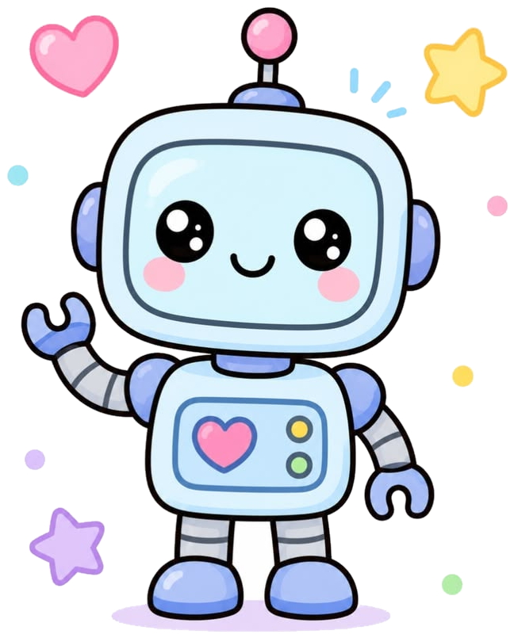
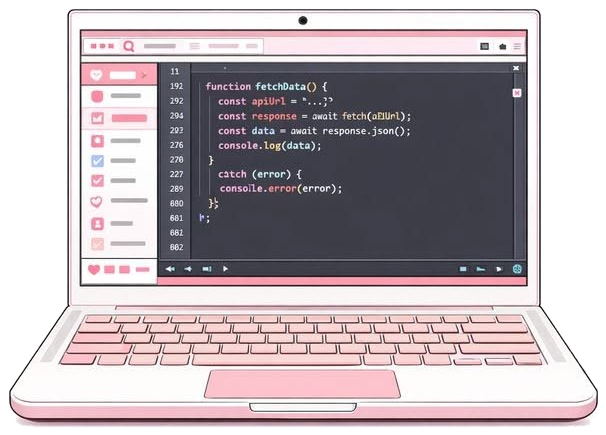
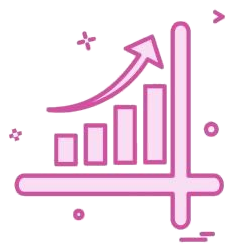
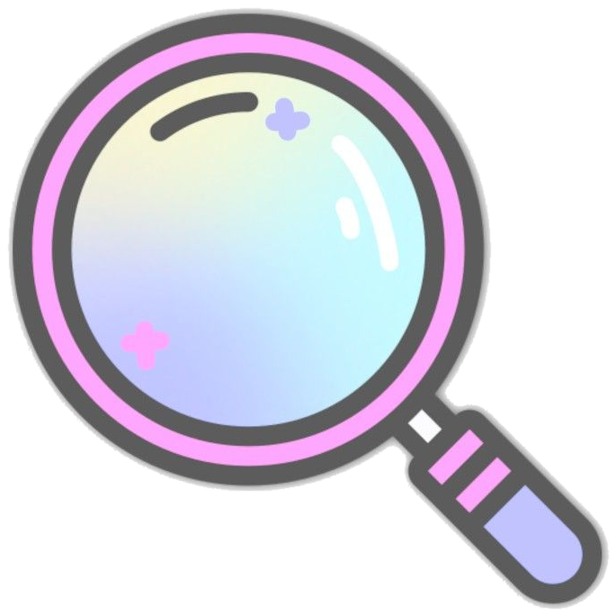
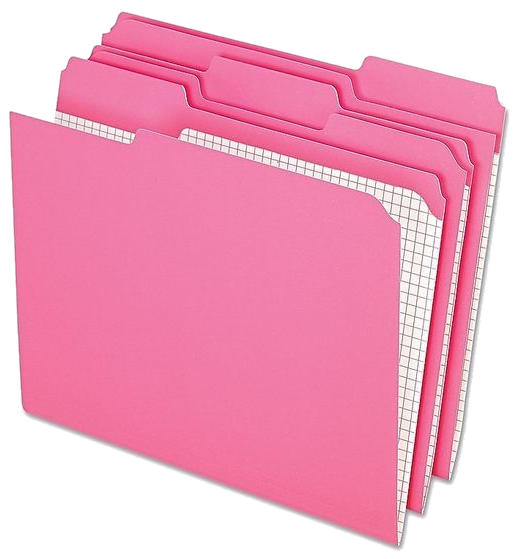
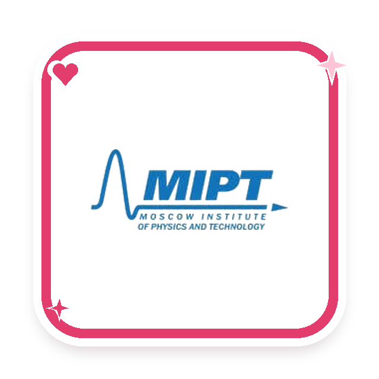
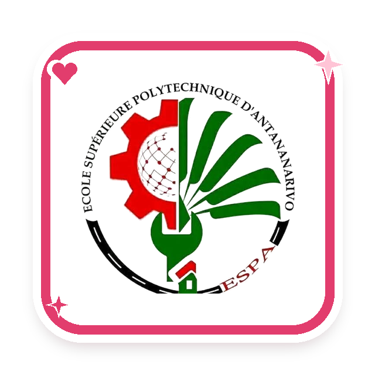
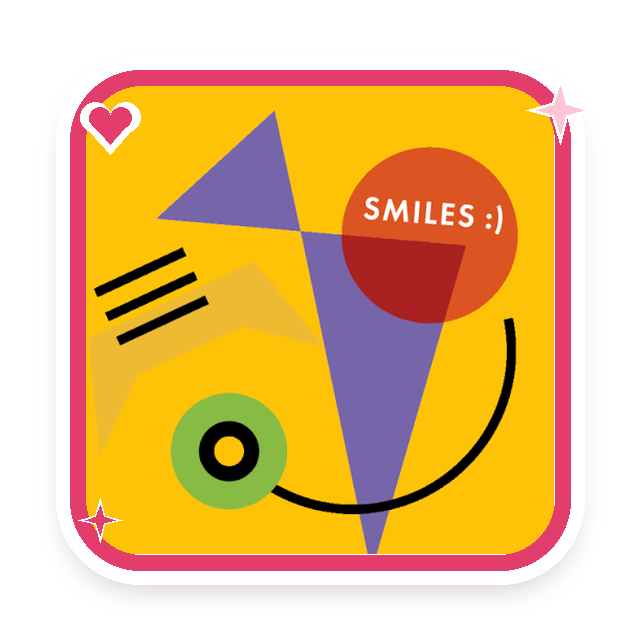

Hi, I'm Henintsoa —
building AI that has an impact.
I don't just want to build AI that works. I want to build AI that has a real impact on the world.
I work on LLMs, AI agents, NLP, information retrieval and automation.
who's Henintsoa?About me.
AI Engineer from Madagascar, with a background in AI, Applied Mathematics and Electronics Engineering. I build LLM systems, RAG and automation workflows, and my research has explored mathematical reasoning in LLMs and NLP document classification.
I'm curious how intelligent systems reason and learn, and how they can have a real impact on the world.
01AI & Machine Learning
02Software Development
03Tools & Infrastructure
experience · tap a cardWork.

AI Developer
AI-powered applications using LLMs, RAG, and agent-based approaches.
Bay Consulting
- Develop AI-powered applications using LLMs, RAG, and agent-based approaches.
- Connect unstructured and structured data for context-aware answers.
- Automation workflows for business challenges.

AI Engineer Intern
Applied AI and machine learning projects.
Giris
- Worked on applied AI and machine learning projects.
- Gained hands-on experience in AI application development, model integration, and experimentation.

Data Analyst
Data processing and analysis to extract insights from datasets.
Yas Madagascar
- Worked with data processing and analysis to extract insights from datasets.
- Applied programming and analytical skills to support data-driven work.
selected projects · tap a cardProjects.
Bible Automation
Connecting AI capabilities with practical workflows around Bible-related content.
Bible Automation
- An automation project combining n8n, Ollama, PostgreSQL, and Docker.
- Connects AI capabilities with practical workflows around Bible-related content.

Web Search and RAG
Responses grounded in relevant external information from the web.
Web Search and RAG
- Combines web information retrieval with retrieval-augmented generation.
- Provides responses grounded in relevant external information.

Chat with PDF
Explore document content through natural-language questions.
Chat with PDF
- An application for exploring document content through natural-language questions.
- Helps users find and understand information within documents.
RESAO
Localized voice-recognition navigation, designed to make interaction more accessible.
First Prize, Hack The Box 2024
- Contributed to RESAO, a localized voice-recognition navigation application.
- Designed to make interaction more accessible.
- Organised by Axian Group.
understanding AI to expand what it can doResearch.
How AI systems reason, retrieve information and use knowledge.
01LLM Reasoning
How LLMs tackle complex tasks like maths, and how reasoning strategies improve them.
02Information Retrieval
Helping AI find and use the right information.
03Knowledge Graphs & Agent Memory
Structuring knowledge as graphs of entities and relations, so agents can remember across interactions, connect facts and reason over what they learned.
04NLP & Sequence Modeling
How models represent and understand language and sequences.
research & education · tap a cardSchool.

MSc in Artificial Intelligence
Research: Mathematical Reasoning in Large Language Models.
Moscow Institute of Physics and Technology
- Research: Mathematical Reasoning in Large Language Models.
- Chain-of-Thought prompting to improve LLM maths reasoning.

Engineering Degree, Electronics
Research: NLP-Based Document Classification.
École Supérieure Polytechnique d'Antananarivo
- Research: NLP-Based Document Classification.
- Doc2Vec + Logistic Regression, 79% precision.

SMILES Skoltech
Sequence modeling: Transformers vs recurrent neural networks.
SMILES Skoltech
- Explored sequence modeling approaches.
- Compared Transformer-based architectures with recurrent neural networks such as GRUs.
my vision · say hiContact.
AI that makes a difference.
A future where AI helps people overcome barriers, access knowledge and reach opportunities once out of reach.
Open to AI engineering, applied AI research and collaborative projects.
Let's build AI that has an impact.